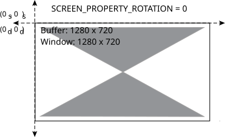
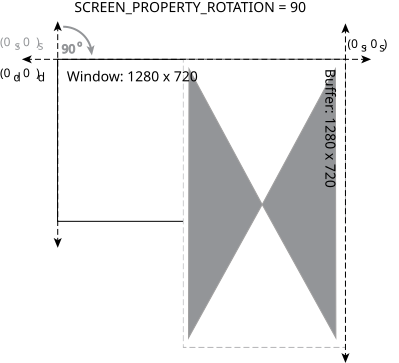
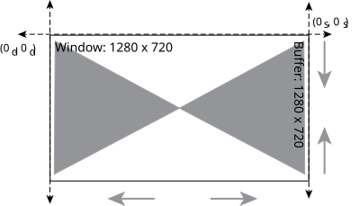
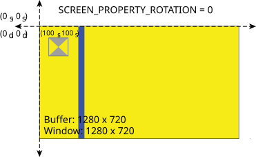
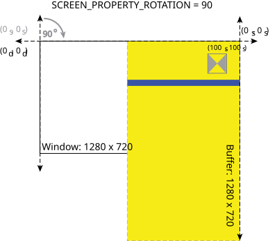
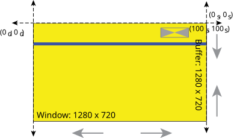

Window rotation affects the source coordinate system.
The rotation of a window is described by its SCREEN_PROPERTY_ROTATION property. The term rotation in this context isn't a true rotation where an object rotates around an axis or center. Screen's window rotation is, in fact, a transformation that includes rotation, translation and scaling. When you change this property, you are effectively transforming the source (or buffer) coordinate system for the associated window. This transformation is how the content of your window rotates. After rotating the source coordinates as specified by the SCREEN_PROPERTY_ROTATION property, Screen applies a translation and scaling on the content to fit the bounds of the window dimensions where applicable. If required, you can modify this scaling behavior to suit your application by setting the window's SCREEN_PROPERTY_SCALE_MODE property.
Changes to a window's rotation don't affect its size or position because these are display-related properties. See the "Window properties" section for more information on the display and source coordinate systems.
The following example shows what happens when you set the window's SCREEN_PROPERTY_ROTATION property to 90 (to achieve a rotation of 90 degrees clockwise):
The window and buffer are the same size (1280 x 720) and start in the same position. The window's position is (0d, 0d) in the display coordinate system. The window's buffer is in position (0s, 0s) in the source coordinate system. Before any rotation is applied, the coordinate systems are aligned with each other. That is, positions (0d, 0d) and (0s, 0s) represent the same location. They each represent the top-left corner of the window and buffer respectively.

When the window's SCREEN_PROPERTY_ROTATION property is set to 90, this changes the position of (0s, 0s) with respect to the display coordinates. The window is still positioned at (0d, 0d) in the display coordinate system. The window's buffer is also still positioned at (0s, 0s) in the source coordinate system. However, the source coordinate system is rotated, so (0d, 0d) and (0s, 0s) no longer represent the same location. Note that (0s, 0s) still represents the top-left corner of the buffer. The window and buffer both remain at the size of 1280 x 720.

Now with the rotation, the window's content no longer fits inside the bounds of the window. Screen applies scaling to fit the content to the window dimensions. The buffer remains at the size of 1280 x 720 with a scaling mode applied.

The following are considered child windows:
For child windows their rotation is relative to their parent.
The following example shows what happens when you set a window's SCREEN_PROPERTY_ROTATION property to 90 (to achieve a rotation of 90 degrees clockwise), but leave the rotation of its child window unchanged:
The example includes two windows: a parent application window and a child window. The window's position is (0d, 0d) in the display coordinate system. The window's buffer is in position (0s, 0s) in the source coordinate system. Before any rotation is applied, the coordinate systems are aligned with each other. That is, positions (0d, 0d) and (0s, 0s) represent the same location. They each represent the top-left corner of the window and buffer respectively.
The child window's position is (100s, 100s) in its parent's window's source coordinate system.

When the window's SCREEN_PROPERTY_ROTATION property is set to 90, this changes the position of (0s, 0s) with respect to the display coordinates. The window is still positioned at (0d, 0d) in the display coordinate system. The window's buffer is also still positioned at (0s, 0s) in the source coordinate system. However, the source coordinate system is rotated, so (0d, 0d) and (0s, 0s) no longer represent the same location. Note that (0s, 0s) still represents the top-left corner of the buffer. The window and buffer both remain at the size of 1280 x 720.
The child window's position remains at (100s, 100s) in the parent window's source coordinate system.

Now with the rotation, the window's content no longer fits inside the bounds of the window. Screen applies scaling to fit the content to the window dimensions. The buffer remains at the size of 1280 x 720 with a scaling mode applied.
